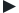

only the show
MY SERIES
add
BREAKING BAD
TRUE DETECTIVE
SHERLOCK
LUTHER
BLACK MIRROR
GAME OF THRONES
DEXTER
HOMELAND
SKINS
SUITS
TWD
THE KILLING
HOUSE OF CARDS
HANNIBAL
VIKINGS
BROADCHURCH
NEWS
CALENDAR
ABOUT
true detective
> Select
ADD
provides
SEASON
1
EPISODE
1
WATCH +
volume
100%
true detective
s01e01
0'00''
